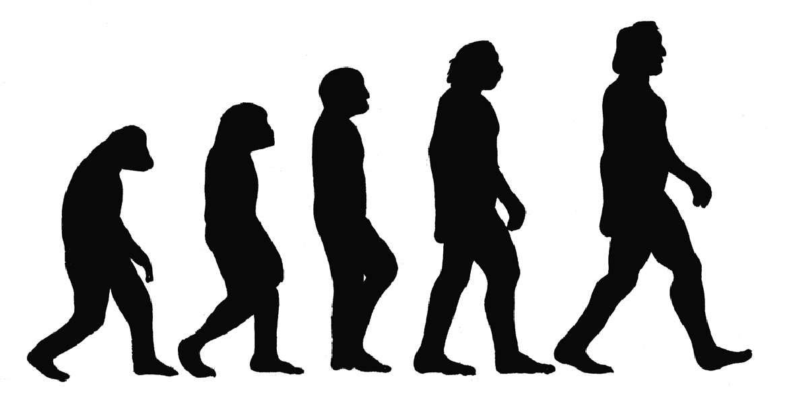
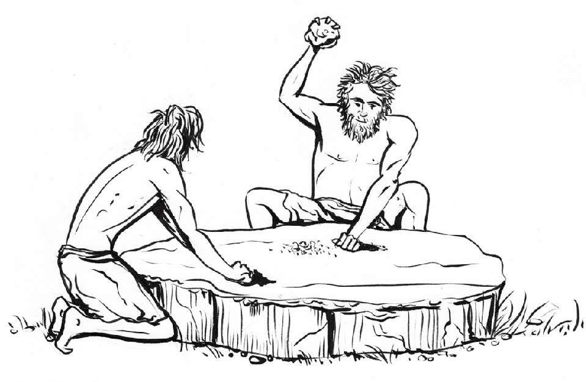

直到19世纪末，人类才对自己和地球有了一些了解，较之地球漫长的历史，这实在令人惊讶。这正如前文曾提到过的理论，冰期的概念于18世纪中期首次提出，直到19世纪70年代才为大众广泛接受。
包括人类在内的物种“进化”以及“物竞天择”的概念到19世纪中期才出现。1859年，查尔斯·达尔文（Charles Darwin，1809—1882）出版了《物种起源》（On the Origin of Species ），进化和物竞天择的概念开始进入大众视野。即便如此，达尔文的进化论还是等到几十年后才成为生命科学的主流。让我们再次把地球年龄想象成一个历时24小时的钟，要用时间测量中无穷小的单位，才能在地球自然历史中描述这一发现所处的时刻。
大约一个半世纪以前的1871年，达尔文出版了影响深远的《人类的由来及性选择》（The Descent of Man, and Selection in Relation to Sex ）一书。这本书直白地阐释了人类进化的理论，出版后一片哗然。达尔文在书中提出人类是从同一个祖先进化而来，而我们共同的祖先又是来自于数千年历史中一系列动物的进化。这样的理论观点对当时的大多数人来说，简直骇人听闻。
然而，随着研究进一步推进和更确切证据的不断发现，达尔文的许多理论在明确的证据面前变得毋庸置疑。现在，达尔文的进化论虽受到各种宗教团体的否定，但科学界已经广泛接受并加以认证。直到今天，“神创论”者依然坚信英国北爱尔兰阿马郡圣公会主教詹姆斯·厄舍的观点——世界是上帝在公元前4004年花费了6天时间创造的。
现在，我们掌握了关于地质年代和化石记录所积累的丰富知识，依此为地球上的生物进化描绘了一幅神奇的肖像。考古学、古生物学和DNA（脱氧核糖核酸）研究领域的发现，更进一步为人类这个种族的进化勾勒出一幅栩栩如生的画面。现在，人们已经知道在20万年前，第一个解剖学意义上的现代人类刚刚诞生。
常识告诉我们人类是由灵长类动物进化而来。尽管目前发现的最早的灵长类化石可追溯到约5 500万年前，但灵长类大概在8 500万年前就与其他哺乳动物分离，开始单独进化。第一批两足动物大概在400万到600万年前开始演化，脱离了跟我们拥有共同祖先的近亲灵长类动物（比如黑猩猩），最终演化为生物学分类里的“人属”。人属并没有明确的时间线，而且这条进化链上有许多个进化环节候选人。
首个有记载的人属成员——能人，大约在230万年前于非洲东部和南部进化形成。他们被认为是最早使用石器工具的种族。能人的大脑与黑猩猩大脑大小相近。2010年5月，南非发现了“豪登人”化石，他们也许比能人进化得还要早，但尚未得到最后证实。

卢多尔夫人和格鲁及亚人是根据学者发现的190万到160万年前人属化石命名的，其与能人的关系尚未确定。目前只发现了一个卢多尔夫人样本——一个在肯尼亚发现的不完整的头骨。它可能只是另一种能人，也可能不是。格鲁及亚人发现于高加索地区的格鲁吉亚，可能是介于能人和直立人之间的进化形态的人种。
直立人进化经历了很长时间。记录显示，这一人种生活在180万年到7万年前，可能是因为所谓的多峇巨灾（印度尼西亚的一次超级火山喷发，大量重要的直立人化石都发现于此时期）而大量死亡。人们认为，能人中的一些种群进化出了脑容量更大的大脑，并开始使用更精细的石器工具——从而进化成新的高级物种直立人。直立人其他主要生理变化还包括膝关节交锁和枕骨大孔所在的位置不同（头骨与脊椎相连处）。
海德堡人（因德国海德堡大学得名）可能是欧洲尼安德特人（荷兰，参见后文）和智人的直系祖先。不可否认，海德堡人是人类进化过程中承前启后的关键链条。有关这些海德堡人的考古证据可追溯到60万至40万年前，但人们认为他们可能生活在80万到30万年前。
海德堡人使用与直立人非常近似的石器。最近在西班牙阿塔普埃卡山发现的28具骨骼表明，海德堡人可能是人属中最早埋葬死者的一种。此外，有些专家认为海德堡人可能已经拥有原始形态的语言，但目前还未发现与之有关的任何艺术形式（象征性思维和语言）。
从40万年前到25万年前是人类最重要的进化期——从直立人到智人的过渡期。在此期间，人类的颅骨变大，意味着脑容量更大，并且开始使用越来越精细的石器。作为一个物种，基因显示智人具有高度的同质性。对于一个分布如此广泛的物种来说，这一现象都相对罕见，并且被视为我们都是在特定地点（非洲）进化并从该地迁移的证据。但是，人类也演变出了一些适应于不同区域的适应性特征，例如肤色、眼睑和鼻子形状。
“尼安德特人”这一物种因出土于德国尼安德特河谷的人类化石而得名。尼安德特人归属不确定，可能是智人的亚种，也可能是与智人同等级别的一个人属独立物种。
尼安德特人最早于60万到35万年前出现在欧洲（无证据显示尼安德特人曾出现于非洲），一直存活到2.5万年前。尼安德特人通常被描绘为低眉毛小下巴的原始生物，事实上他们会使用较先进的工具（弓箭、骨制工具），有自己的语言，并且生活在复杂的社会群体中。据研究，尼安德特人的颅骨和现代人类大小差不多，甚至更大。在人属中，脑容量大小确实是智慧的关键。
化石记录显示，尼安德特人在2.5万年前消失。相关原因目前仍众说纷纭。除去超级火山喷发，或无法迅速适应气候骤变而导致死亡等假设，对尼安德特人来说，我们人类似乎才是导致其灭亡的致命因素。据说尼安德特人灭亡最有可能是不断扩张的人类种群为了生存互相竞争而导致的。然而，新的证据表明尼安德特人的灭绝是现代人同化的结果。这一理论非常有趣。2010年，通过DNA测序获得的证据表明，生活在欧洲和亚洲的现代非非洲人的基因有1%至4%源自尼安德特人。
是霍比特人还是人类？
弗洛雷斯人身材短小，因此被亲切地称为“霍比特人 [2] ”。他们是新近在印度尼西亚弗洛雷斯岛发现的种群，生活在10万到1.2万年前。2003年，研究人员发现了一具女性弗洛雷斯人骨骼化石，大约有1.8万年的历史。她活着的时候身高不超过1米。当然，她也可能只是个有病理性矮小症的现代人，毕竟，直至1400年前，还有俾格米人 [3] 生活在邻近岛屿上。但这名女性的颅骨特别小，因此有关其脑容量的讨论可能会持续一段时间。
史前时代一般划分为3个时代：石器时代、青铜时代和铁器时代。
人属里从能人到智人的所有成员，都存在于一个广泛定义为“石器时代”的时期。石器时代大概持续了300万年，直至公元前4500年至公元前2000年，随着金属加工的出现，这一时代才在不同时期终结于不同人类种群中。
跟青铜时代和铁器时代相比，石器时代实在漫长得多，所以它本身又被细分为3个时代：旧石器时代（根据对火的控制和对石器的使用，这一时期又分为旧石器时代早期、中期和晚期）、中石器时代（首次使用高级工具，例如弓和独木舟）和新石器时代（存在陶器、普通驯养、重要的葬礼或宗教场所建筑）。

与漫长的石器时代相比较，青铜时代不过是一眨眼的工夫。青铜时代以铜和青铜的冶炼及制造武器、器皿和饰品为特征。地球上人口最稠密的地区基本上在同一时间进入青铜时代，其他地方则相对较晚。公元前3750年到公元前3000年，欧洲、近东、印度和中国进入青铜时代，韩国在公元前800年才进入。青铜时代结束于公元前1200年到公元前600年。在这一时期，美索不达米亚和古埃及已出现文字，已知的最古老的文学文本就来自公元前2700年到公元前2600年。文明也在这段时期开始发展，最具代表性的是美索不达米亚，其中包括苏美尔、阿卡德、巴比伦和亚述帝国，这些文明遗迹都在今天的伊拉克境内。
接下来便进入铁器时代，但铁器时代不仅仅有铁，还有对钢的使用。这一时期最早（约公元前1300年）始于古代近东（安纳托利亚、塞浦路斯、埃及、波斯），大概100年后开始于欧洲和印度，然后是亚洲其他地方：中国（公元前600年）、韩国（公元前400年）和日本（公元前100年）。铁器时代一直持续到公历纪元，于公元400年在欧洲结束，公元500年在日本结束。这个时代的重要文本有印度《吠陀经》《希伯来圣经》（《旧约》）和古希腊早期文学。
BC还是BCE？
因为带有基督教含义，之前用来表示“公元前”的英文简写BC（Before Chris，耶稣诞生之前）现在经常改为BCE（Before Common Era，公元元年之前）。AD（拉丁文Anno Domini的简写，含义为主的世代，用来表示“公元后”）逐渐被非宗教的CE（Common Era，公历纪元）替代。但无论如何表达，公元元年的起源并没有变，正好和耶稣诞生之年一致。
“时间旅行锦囊”
去美国大峡谷旅行！
美国亚利桑那州大峡谷是一片令人惊叹的荒野奇景，是世界七大自然奇观之一。行走在277英里 [4] 长的大峡谷中，可以看到地球20亿年的地质历史，这些历史就暴露在一层又一层璀璨的岩石记录上。进入这完美保存的洞穴和悬崖住所，可让你回到公元前1200年左右古代普韦布洛人 [5] 曾居住在这里的那个年代。
[1] 圣公会又称安立甘会，是基督新教的一个教派。
[2] 霍比特人是在托尔金（J. R. R. Tolkien）的奇幻小说中出现的一种民族，体型娇小为其特色，但并非矮人或侏儒。
[3] 俾格米人被称为非洲的“袖珍民族”，成年人身高约在1.3米到1.4米之间。
[4] 1英里约等于1.609千米。
[5] 普韦布洛人，或称阿纳萨齐人，住在亚利桑那的印第安人。